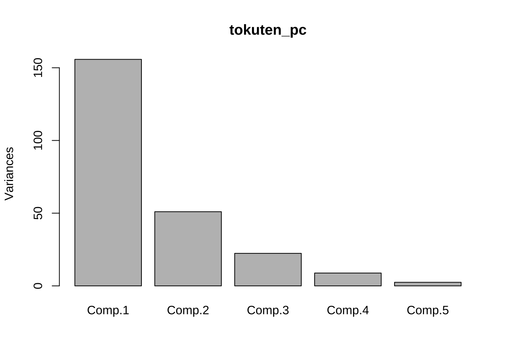
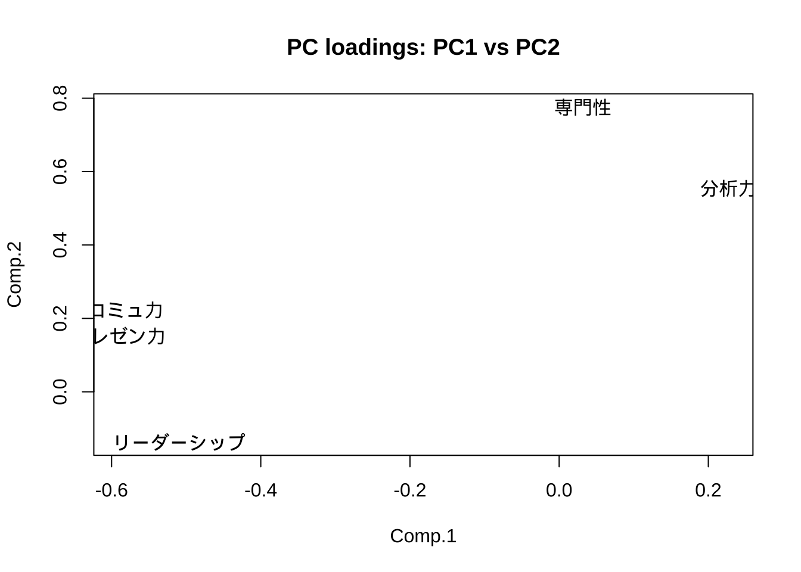
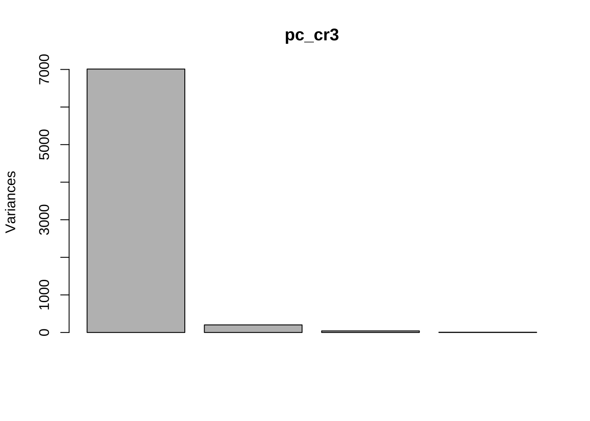

11 主成分分析 (PCA)
11.1 基本操作
データセット: 従業員スキル評価データ(仮想)
文字化けする場合には, 英語版”testdat_eng.csv”を使用しても良い.
"testdat_30_jap.csv" (日本語版/英語版)
- 氏名/Name
- 専門性/Expertise (0-100)
- 分析力/Analytics (同)
- リーダーシップ/Leadership (同)
- プレゼン力/Presentation (同)
- コミュ力/Communication (同)
- n = 9, p = 5tokuten <- read.csv("testdat_jap.csv", header = T, row.names = 1, skip = 1)
#colnames(tokuten) <- c("name", "E", "A", "L", "P", "C")
tokuten
# 散布図
pairs(tokuten)#> 専門性 分析力 リーダーシップ プレゼン力 コミュ力
#> 山田 80 87 70 65 67
#> 鈴木 85 83 65 68 63
#> 田中 75 70 80 79 75
#> 中村 70 72 85 83 79
#> 大野 88 85 85 90 91
#> 松井 75 78 79 85 80
#> 高木 80 80 75 75 80
#> 三浦 83 72 85 80 83
#> 佐藤 69 82 77 70 80# 分散共分散行列に対するPCA（デフォルト)
tokuten_pc <- princomp(tokuten)
summary(tokuten_pc)
plot(tokuten_pc) # Scree plot = barplot of PC variances (eigenvalues)
screeplot(tokuten_pc) # same as above
#> Importance of components:
#> Comp.1 Comp.2 Comp.3 Comp.4 Comp.5
#> Standard deviation 12.4807420 7.1424787 4.73037885 2.9724343 1.57269337
#> Proportion of Variance 0.6477709 0.2121478 0.09305346 0.0367422 0.01028558
#> Cumulative Proportion 0.6477709 0.8599188 0.95297222 0.9897144 1.00000000# 主成分負荷量(係数)
tokuten_pc$loadings
# t(tokuten_pc$loadings) %*% tokuten_pc$loadings # 直交性の確認
# 注) 下のprcompの結果と, 符号が逆転
# scatter plot for 1st & 2nd PC
#plot(tokuten_pc$loadings[, 1:2])
plot(tokuten_pc$loadings[, 1:2], type = "n", main = "PC loadings: PC1 vs PC2") # plot only axis
text(tokuten_pc$loadings, colnames(tokuten))
#>
#> Loadings:
#> Comp.1 Comp.2 Comp.3 Comp.4 Comp.5
#> 専門性 0.775 0.536 0.332
#> 分析力 0.227 0.554 -0.634 -0.325 0.366
#> リーダーシップ -0.510 -0.137 0.323 0.786
#> プレゼン力 -0.591 0.153 0.275 -0.741
#> コミュ力 -0.582 0.223 -0.486 0.362 -0.496
#>
#> Comp.1 Comp.2 Comp.3 Comp.4 Comp.5
#> SS loadings 1.0 1.0 1.0 1.0 1.0
#> Proportion Var 0.2 0.2 0.2 0.2 0.2
#> Cumulative Var 0.2 0.4 0.6 0.8 1.0# 主成分得点(データ毎)
tokuten_pc$scores
plot(tokuten_pc$scores[, 1], tokuten_pc$scores[, 2],
type = "n", main = "PC scores: PC1 vs PC2")
#text(tokuten_pc$scores[, 1], tokuten_pc$scores[, 2],
text(tokuten_pc$scores[, 1], tokuten_pc$scores[, 2], rownames(tokuten), family = "HiraKakuProN-W3") # 日本語文字化け対応 (mac)#biplot(tokuten_pc) # plot PC & PC scores ===> display first 2 PCs only...
# # 計算結果確認
# (yama <- tokuten["山田", ]-apply(tokuten, 2, mean)) # demeaned score
# sum(tokuten_pc$loadings[, "Comp.1"] * yama) # Yamada's PC1 score
# sum(tokuten_pc$loadings[, "Comp.2"] * yama) # Yamada's PC2 score
# # compare this with tokuten_pc$scores["Yamada", ]
#> Comp.1 Comp.2 Comp.3 Comp.4 Comp.5
#> 山田 19.304343 2.7048291 -2.4411238 0.5754498 2.6750248
#> 鈴木 21.655520 4.6155395 5.6073003 -1.7490457 -0.7368287
#> 田中 -2.739766 -8.0346039 5.4765050 0.1887216 -0.4687677
#> 中村 -9.682974 -9.9826824 0.6190434 -2.0247358 1.8769769
#> 大野 -17.277425 14.9224986 -1.8787424 -1.1322419 0.8666327
#> 松井 -6.867523 -1.4328205 -0.3577567 -5.3750278 -1.0885751
#> 高木 1.694979 2.5684468 -1.6399325 1.7537323 -2.8802837
#> 三浦 -9.824535 0.5291295 4.8161616 5.9565572 0.4056066
#> 佐藤 3.737381 -5.8903368 -10.2014547 1.8065903 -0.6497859# 第1, 2主成分
tokuten_pc$scores[, 1:2]
tokuten_pc$loadings[, 1:2]
# biplot(tokuten_pc$scores[, 1:2], tokuten_pc$loadings[, 1:2]) # loadings accompany "arrows" <-- Looks more useful!!
biplot(tokuten_pc$scores[, 1:2], tokuten_pc$loadings[, 1:2], family = "HiraKakuProN-W3") # 日本語文字化け対応 (mac)# biplot(tokuten_pc$loadings[, 1:2], tokuten_pc$scores[, 1:2]) # scores accompany "arrows"
biplot(tokuten_pc$loadings[, 1:2], tokuten_pc$scores[, 1:2], family = "HiraKakuProN-W3") # 日本語文字化け対応 (mac)#> Comp.1 Comp.2
#> 山田 19.304343 2.7048291
#> 鈴木 21.655520 4.6155395
#> 田中 -2.739766 -8.0346039
#> 中村 -9.682974 -9.9826824
#> 大野 -17.277425 14.9224986
#> 松井 -6.867523 -1.4328205
#> 高木 1.694979 2.5684468
#> 三浦 -9.824535 0.5291295
#> 佐藤 3.737381 -5.8903368
#> Comp.1 Comp.2
#> 専門性 0.03162775 0.7753770
#> 分析力 0.22710092 0.5541994
#> リーダーシップ -0.50974398 -0.1365068
#> プレゼン力 -0.59111858 0.1530044
#> コミュ力 -0.58151936 0.2227311# 評価項目ペア別, 各従業員のスコア散布図
#plot(tokuten)
# par(mfrow = c(2, 2))
plot(tokuten[, c(1, 2)], type = "n", main = "item 1 vs item 2") # plot only axis
# text(tokuten[, c(1, 2)], rownames(tokuten))
text(tokuten[, c(1, 2)], rownames(tokuten), family = "HiraKakuProN-W3") # 日本語文字化け対応 (mac)plot(tokuten[, c(2, 3)], type = "n", main = "item 2 vs item 3") # plot only axis
# text(tokuten[, c(2, 3)], rownames(tokuten))
text(tokuten[, c(2, 3)], rownames(tokuten), family = "HiraKakuProN-W3") # 日本語文字化け対応 (mac)# plot(tokuten[, c(3, 4)], type = "n") # plot only axis
# text(tokuten[, c(3, 4)], rownames(tokuten))
# plot(tokuten[, c(4, 5)], type = "n") # plot only axis
# text(tokuten[, c(4, 5)], rownames(tokuten))# 相関行列に対するPCA
# tokuten_pc2 <- princomp(tokuten, cor = T)
# summary(tokuten_pc2)
# tokuten_pc2$loadings
# tokuten_pc2$scores[, 1:2]
# tokuten_pc2$loadings[, 1:2]
# 代替的関数
# prcomp() # 不偏分散共分散行列の使用 (÷(n-1))
tokuten_prcomp <- prcomp(tokuten)
#tokuten_prcomp <- prcomp(tokuten, scale = T)
summary(tokuten_prcomp)
tokuten_prcomp$rotation # PC負荷量
tokuten_prcomp$x # PC得点
#biplot(tokuten_prcomp)
biplot(tokuten_prcomp, family = "HiraKakuProN-W3")#> Importance of components:
#> PC1 PC2 PC3 PC4 PC5
#> Standard deviation 13.2378 7.5757 5.01732 3.15274 1.66809
#> Proportion of Variance 0.6478 0.2122 0.09305 0.03674 0.01029
#> Cumulative Proportion 0.6478 0.8599 0.95297 0.98971 1.00000
#> PC1 PC2 PC3 PC4 PC5
#> 専門性 -0.03162775 0.7753770 0.53571555 0.3316583 -0.02831625
#> 分析力 -0.22710092 0.5541994 -0.63357070 -0.3251925 -0.36623249
#> リーダーシップ 0.50974398 -0.1365068 -0.01367592 0.3227645 -0.78559724
#> プレゼン力 0.59111858 0.1530044 0.27483158 -0.7411911 0.04766342
#> コミュ力 0.58151936 0.2227311 -0.48567230 0.3615403 0.49561793
#> PC1 PC2 PC3 PC4 PC5
#> 山田 -19.304343 2.7048291 -2.4411238 0.5754498 -2.6750248
#> 鈴木 -21.655520 4.6155395 5.6073003 -1.7490457 0.7368287
#> 田中 2.739766 -8.0346039 5.4765050 0.1887216 0.4687677
#> 中村 9.682974 -9.9826824 0.6190434 -2.0247358 -1.8769769
#> 大野 17.277425 14.9224986 -1.8787424 -1.1322419 -0.8666327
#> 松井 6.867523 -1.4328205 -0.3577567 -5.3750278 1.0885751
#> 高木 -1.694979 2.5684468 -1.6399325 1.7537323 2.8802837
#> 三浦 9.824535 0.5291295 4.8161616 5.9565572 -0.4056066
#> 佐藤 -3.737381 -5.8903368 -10.2014547 1.8065903 0.649785911.2 2種類のPCA: 相関行列ベース vs 分散共分散行列ベース
データセット3: USArrests data
USArrests
- 全米50州, 人口10万人当たり
- 1973年の凶悪犯罪(assault, murder, rape)件数, 及び都市部の人口割合(%)
- n = 50, p = 4#> Murder Assault UrbanPop Rape
#> Min. : 0.800 Min. : 45.0 Min. :32.00 Min. : 7.30
#> 1st Qu.: 4.075 1st Qu.:109.0 1st Qu.:54.50 1st Qu.:15.07
#> Median : 7.250 Median :159.0 Median :66.00 Median :20.10
#> Mean : 7.788 Mean :170.8 Mean :65.54 Mean :21.23
#> 3rd Qu.:11.250 3rd Qu.:249.0 3rd Qu.:77.75 3rd Qu.:26.18
#> Max. :17.400 Max. :337.0 Max. :91.00 Max. :46.00# どちらが良いか?
# (pc_cr1 <- princomp(USArrests))
# (pc_cr2 <- princomp(USArrests, cor = TRUE))
(pc_cr3 <- prcomp(USArrests))
#> Standard deviations (1, .., p=4):
#> [1] 83.732400 14.212402 6.489426 2.482790
#>
#> Rotation (n x k) = (4 x 4):
#> PC1 PC2 PC3 PC4
#> Murder 0.04170432 -0.04482166 0.07989066 -0.99492173
#> Assault 0.99522128 -0.05876003 -0.06756974 0.03893830
#> UrbanPop 0.04633575 0.97685748 -0.20054629 -0.05816914
#> Rape 0.07515550 0.20071807 0.97408059 0.07232502
(pc_cr4 <- prcomp(USArrests, scale = TRUE))
#> Standard deviations (1, .., p=4):
#> [1] 1.5748783 0.9948694 0.5971291 0.4164494
#>
#> Rotation (n x k) = (4 x 4):
#> PC1 PC2 PC3 PC4
#> Murder -0.5358995 -0.4181809 0.3412327 0.64922780
#> Assault -0.5831836 -0.1879856 0.2681484 -0.74340748
#> UrbanPop -0.2781909 0.8728062 0.3780158 0.13387773
#> Rape -0.5434321 0.1673186 -0.8177779 0.08902432
summary(pc_cr3)
#> Importance of components:
#> PC1 PC2 PC3 PC4
#> Standard deviation 83.7324 14.21240 6.4894 2.48279
#> Proportion of Variance 0.9655 0.02782 0.0058 0.00085
#> Cumulative Proportion 0.9655 0.99335 0.9991 1.00000
plot(pc_cr4)